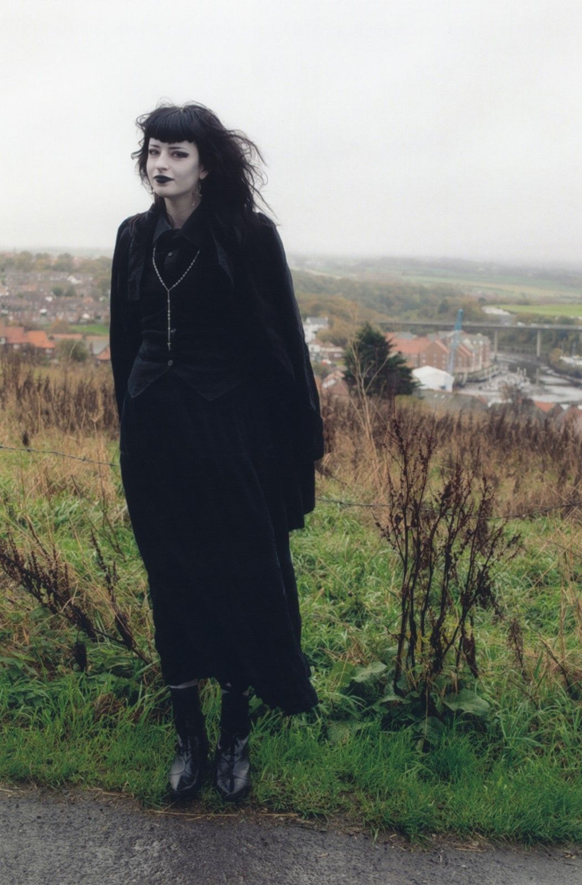
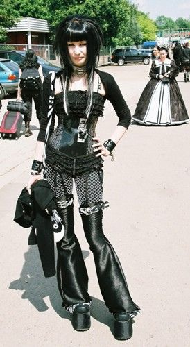
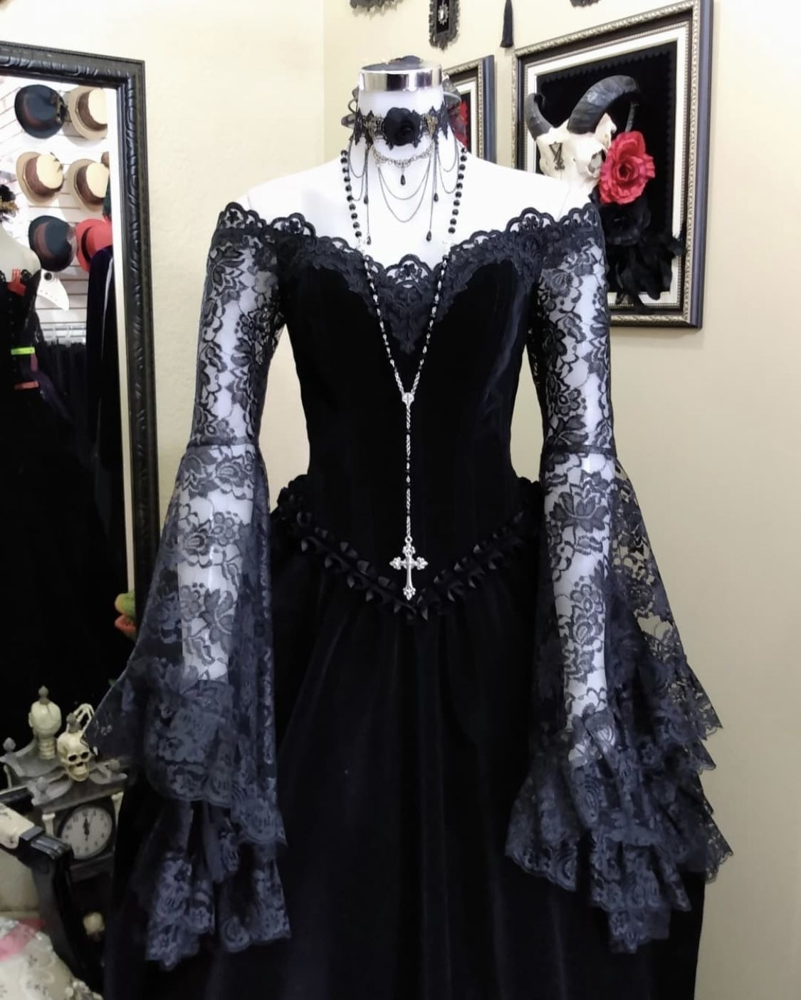
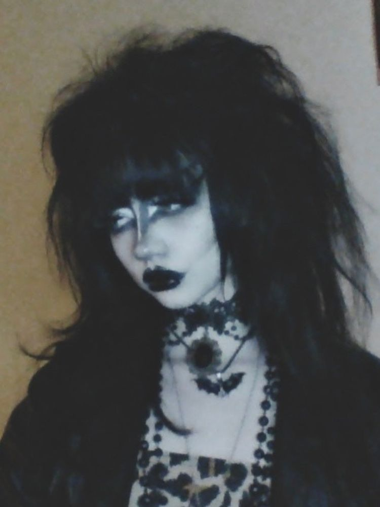
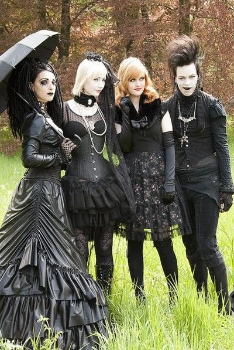

La moda gótica
La moda gótica es más que solo un estilo de vestimenta, es una forma de expresión que abarca varios aspectos de la vida y la estética. Además de la ropa, la moda gótica también se refleja en el maquillaje, el peinado, los accesorios, el arte y la música. Está arraigada en la subcultura gótica, que se caracteriza por su fascinación por lo oscuro, lo misterioso y lo macabro.
El estilo gótico busca romper con los estándares de belleza y las normas sociales convencionales. Los seguidores de este estilo buscan destacarse y expresar su individualidad a través de su apariencia distintiva y a menudo provocativa. La moda gótica se inspira en la estética victoriana, el romanticismo, el estilo punk y la cultura underground.
En términos de ropa, los seguidores de la moda gótica suelen vestir de negro de pies a cabeza. El negro es considerado el color principal y simboliza la oscuridad, el misterio y la rebeldía. Sin embargo, también se pueden incorporar otros colores oscuros como el morado, el rojo oscuro o el verde oscuro. Las prendas suelen ser ajustadas, con líneas angulosas y detalles como encajes, volantes, tachuelas o cadenas.
El maquillaje en la moda gótica es característicamente dramático y a menudo incluye tonos oscuros en los ojos, como sombras de ojos negras o ahumadas, delineador oscuro y pestañas prominentes. Los labios suelen ser intensos, con tonos oscuros como el rojo, el morado o el negro. La piel pálida también es común en el maquillaje gótico, y se puede lograr mediante bases o polvos claros.
En cuanto al peinado, se pueden ver estilos elaborados y llamativos, como el cabello largo y suelto con ondas, trenzas o rastas, o peinados con mechones de colores intensos. Los accesorios son una parte importante de la moda gótica y pueden incluir gargantillas de encaje, pulseras de cuero, anillos llamativos, medias de red, paraguas victorianos, sombreros de ala ancha o guantes largos.
La moda gótica también se refleja en la actitud y la forma de vida de quienes la adoptan. Se valora la creatividad, la individualidad, la introspección y la apreciación por lo oscuro y lo misterioso. La música juega un papel fundamental en esta subcultura, con géneros como el rock gótico, el post-punk y la música industrial como bandas sonoras de este estilo de vida.
Color predominante: El negro es el color principal en la moda gótica. Se utiliza en prendas de vestir, accesorios y maquillaje para lograr un aspecto oscuro y misterioso.

Estilos de ropa: Las prendas góticas suelen ser ajustadas, ceñidas al cuerpo y con líneas angulosas. Los vestidos largos, las capas, las chaquetas de cuero, las faldas de encaje, los pantalones ajustados y las camisas con detalles victorianos son comunes en este estilo.

Detalles y adornos: La moda gótica a menudo incluye detalles y adornos que refuerzan su estética. Esto puede incluir encajes, volantes, corsets, tachuelas, cadenas, elementos de inspiración victoriana, cruces, calaveras y otros símbolos asociados con la subcultura gótica.

Maquillaje y peinado: El maquillaje en la moda gótica suele ser pálido, con énfasis en los ojos oscuros y los labios intensos. Se utilizan tonos oscuros de sombras de ojos y lápiz labial, a menudo en combinación con una tez pálida. En cuanto al peinado, se pueden ver estilos elaborados, como el cabello largo y suelto, peinados con mechones de colores intensos o estilos inspirados en el romanticismo victoriano.

Accesorios: Los accesorios juegan un papel importante en la moda gótica. Se pueden usar collares de gargantilla, brazaletes de cuero, anillos, medias de red, paraguas victorianos, sombreros de ala ancha, guantes largos y otros elementos que complementan el estilo oscuro y dramático.
